Catalyst 3D objects, in the apps
Home's icons stay flat. The objects are in the apps, where they show something: the robot in the Robot app with each part coloured by what the robot reports, the battery's charge, the weather as it is, Wi-Fi's signal, setup's steps, and empty pages. Every picture here was drawn by the shell's own code from the pack it would ship (the turntables from a larger preview pack of whole turns). Panel shots are at the panel's 320 × 170, dithered to 16 bits as it shows them, and three times larger.
Where they come from
Built in code (tools/bake3d/models.py): the robot in the Robot app (its parts: drivetrain, intake, elevator, shooter, bumpers, frame), the battery (five cells and a bolt), Wi-Fi (a dot and three arcs), the weather, the handheld, the key, the switch, the tray, and the apps' objects for their empty pages (and a moon, made but not carried). Generated with Higgsfield (Tripo text to 3D) and kept reduced in tools/bake3d/glb/: setup's toy robot, the globe, the laptop and the trophy (and a rocket, made but not carried). A team's own robot is baked from its CAD with tools/bake3d/robot.sh and read from /data/catalyst/robot3d.pack, in place of the shell's.
Contact sheets
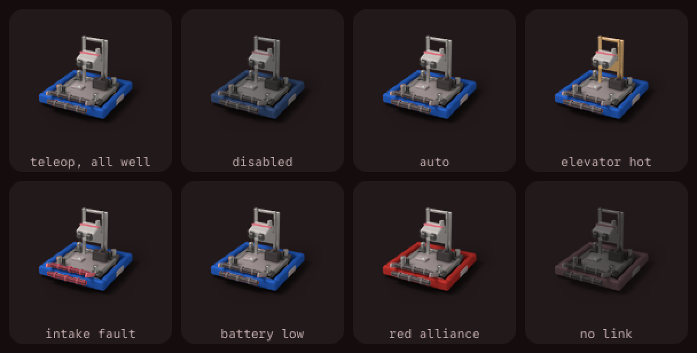
The Robot app's robot in each state it shows, dark: parts glow amber when hot, red on a fault, faint ice at work; bumpers in the alliance's colour; dimmed when disabled, greyed with no link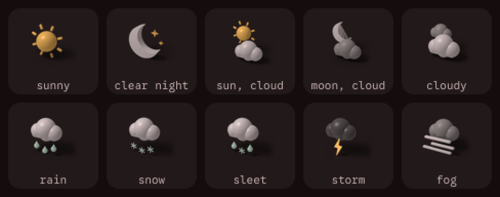
Weather's card, each condition, dark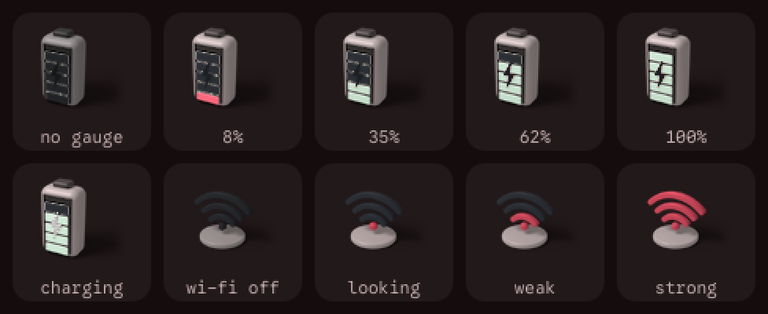
Settings › Battery's battery by its charge, and Wi-Fi by its signal, dark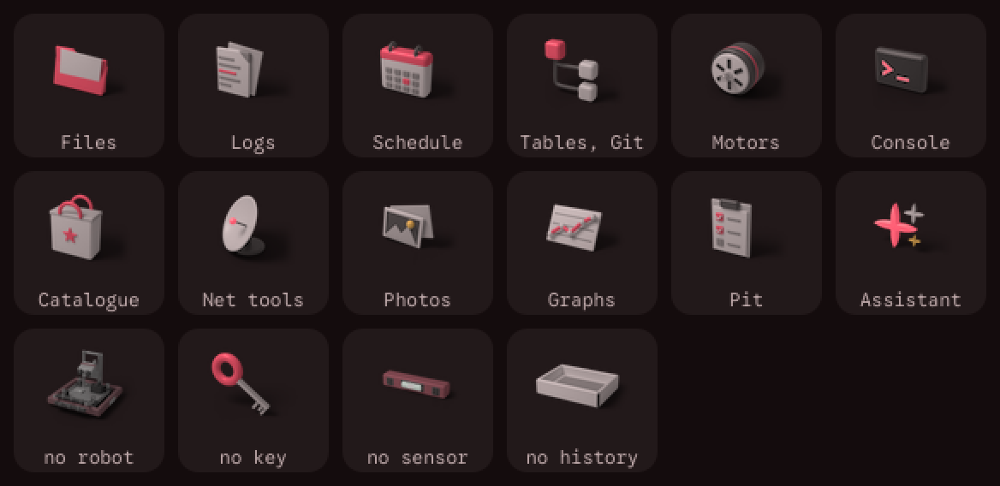
Empty pages, dark: the app's own object, or the robot greyed where there is no robot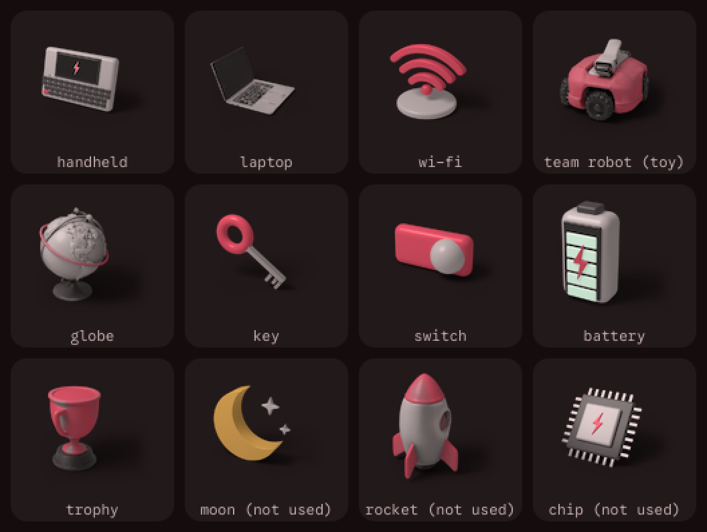
Setup's objects and the rest, dark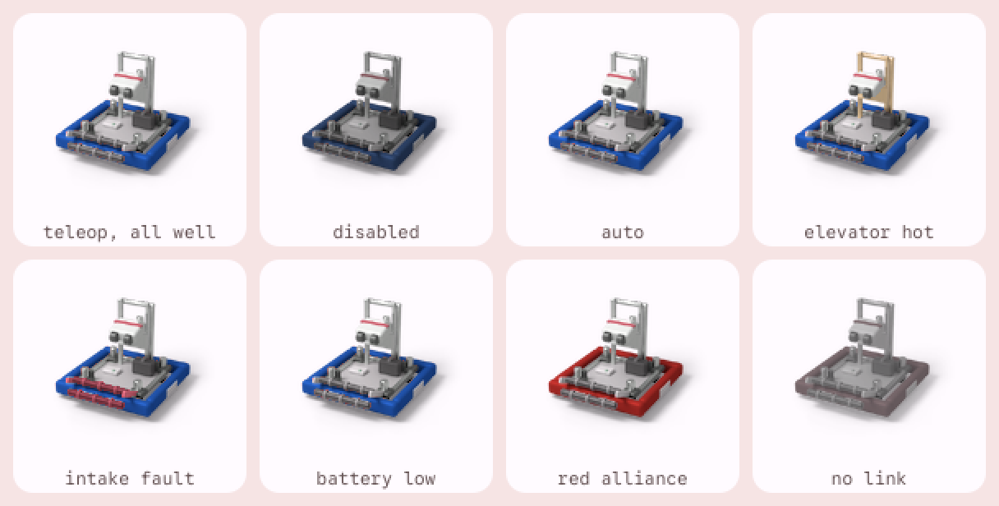
The Robot app's robot in each state it shows, light: parts glow amber when hot, red on a fault, faint ice at work; bumpers in the alliance's colour; dimmed when disabled, greyed with no link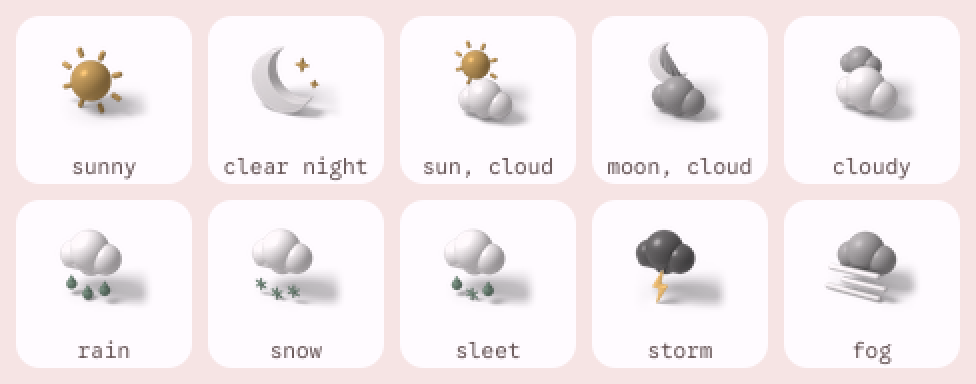
Weather's card, each condition, light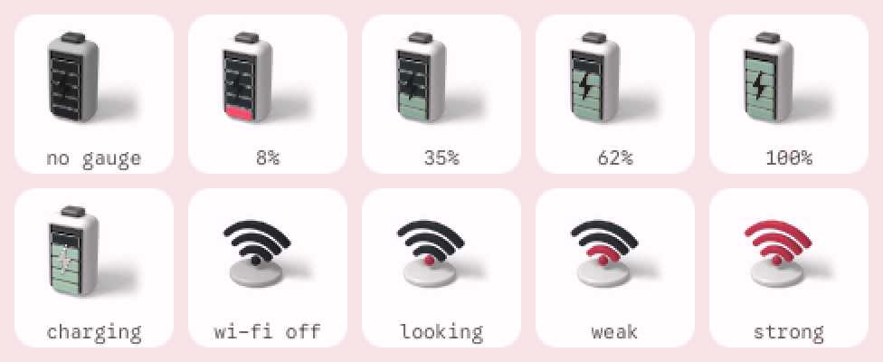
Settings › Battery's battery by its charge, and Wi-Fi by its signal, light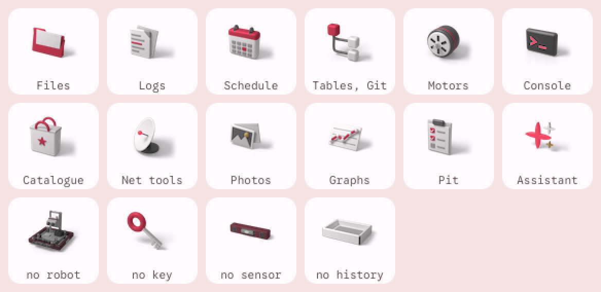
Empty pages, light: the app's own object, or the robot greyed where there is no robot Setup's objects and the rest, light
Setup's objects and the rest, light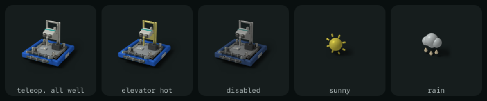
The same in the user's own colour (a teal): the robot's own accent parts and the weather follow itTurntables
Every rendered angle (15° apart), shown twice their size. The robot's states side by side; setup's objects dark beside light; the weather dark.
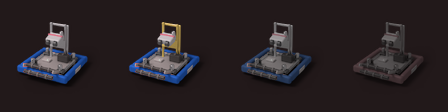
the robot: teleop · elevator hot · disabled · no link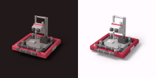
robot-generic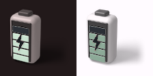
battery wifi
wifi handheld
handheld laptop
laptop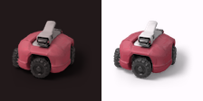
robot globe
globe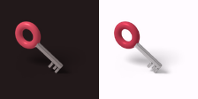
key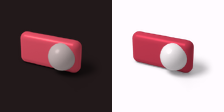
toggle trophy
trophy moonweather-sunny
moonweather-sunny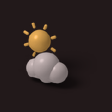
weather-partly-day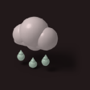
weather-rain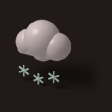
weather-snow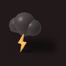
weather-stormweather-clear-nightOn the panel
Motion
At the handheld's beat of 25 ms a frame, shown twice the panel's size.
 motion-robot-turning
motion-robot-turning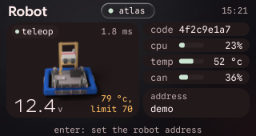
motion-robot-motor-hot motion-robot-enabled
motion-robot-enabled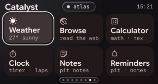
motion-weather-arrivesWhat it costs
pack (in the program file; read in place, never copied whole): 2869 kB
on this PC: decoding and colouring a robot frame (112 px, its parts by state): 228 µs; a frame while it turns (two angles blended): 44 µs
the handheld, estimated at 20x this PC (README's factor): 4.6 ms to decode a frame, 0.9 ms a frame while it turns
cache of coloured frames: at most 384 kB (CACHE_BYTES)
the Robot page turning for 20 s: 343 kB of frames at most, 57 frames decoded
Weather's page: 63 kB
Home (flat icons): 0 kB